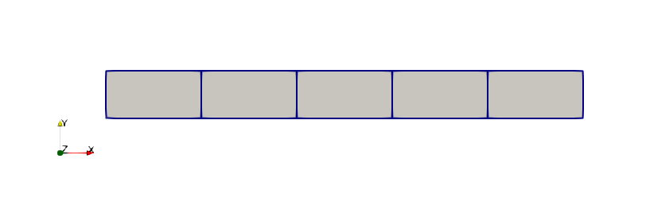
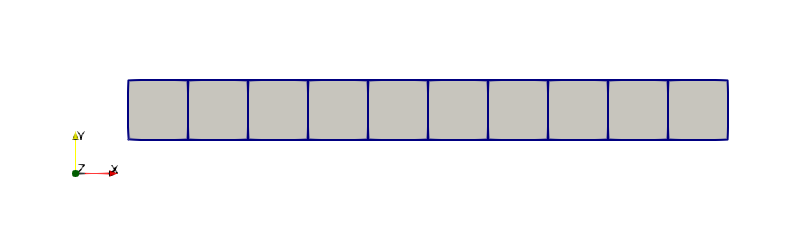

NAFEMS Benchmark 1D Transient Heat Conduction T3
Problem Description
A NAFEMS one-dimensional transient heat conduction problem (Finite Element Methods and Standards, 1990) was created and run using the heat transfer module in MOOSE. A description of the problem and a summary of the results follows.
Model
A bar of length 0.1 meters and cross section of 0.01 meters in width and depth is modeled using uniform sized elements with either a coarse mesh (5 elements, Figure 1) or a fine mesh (10 elements, Figure 2). A transient heat conduction simulation is performed with a total simulation time of 32 seconds. The simulation was modeled using 1D, 2D and 3D element types.

Figure 1: Coarse mesh for NAFEMS T3 transient heat conduction model.

Figure 2: Fine mesh for NAFEMS T3 transient heat conduction model.
Loading
Zero internal heat generation.
Boundary Conditions
No heat flux perpendicular to domain
Material Properties
Reference Solution
The temperature at a position of 0.08 meters along the length of the bar at the end of the simulation is the target solution. This value should be .
Results
The table below summarizes the temperature solutions for this problem using the heat transfer module of MOOSE. The values in parentheses are the difference between the MOOSE result and the target solution in percentages.
Table 1: Summary of Results
| Element Type | T, Coarse Mesh | T, Fine Mesh |
|---|---|---|
| EDGE2 | 40.3 (10.1%) | 36.9 ( 0.8%) |
| EDGE3 | 35.9 (-1.9%) | 36.1 (-1.4%) |
| QUAD4 | 40.3 (10.1%) | 36.9 ( 0.8%) |
| QUAD8 | 35.9 (-1.9%) | 36.1 (-1.4%) |
| QUAD9 | 35.9 (-1.9%) | 36.1 (-1.4%) |
| HEX8 | 40.3 (10.1%) | 36.9 ( 0.8%) |
| HEX20 | 35.9 (-1.9%) | 36.1 (-1.4%) |
| HEX27 | 35.9 (-1.9%) | 36.1 (-1.4%) |
Summary
The results for most element types are within about 2% of the target temperature. However, the lower order elements with the coarse mesh exhibit a somewhat higher deviation from the target value of about 10%. In practice, where a mesh refinement study would be performed, this level of inaccuracy of a solution would be observed and resolved.
References
- National Agency for Finite Element Methods and Standards.
The Standard NAFEMS Benchmarks, Rev. 3.
NAFEMS, October 1990.[BibTeX]